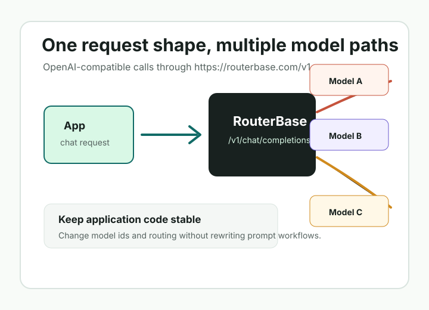

One base URL
Call `https://routerbase.com/v1` with a familiar chat-completions request shape.
Open guideOpenAI-compatible AI gateway examples
This cookbook turns the RouterBase examples, API collections, and article drafts into a browsable developer guide. Start with one request, then move into model switching and public API client workflows.

Call `https://routerbase.com/v1` with a familiar chat-completions request shape.
Open guideUse Postman, Bruno, Insomnia, or OpenAPI to inspect RouterBase requests.
Open collectionsReview the content plan and drafts for Dev.to and Hashnode publication.
Open plan